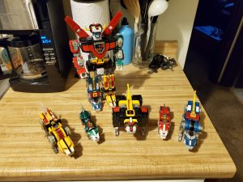

A personal blog about getting away from bosses and the people who think they own my time. I'm trying to start something in media, but I honestly have no clue if I'll stick with it because, I suck at this kind of stuff. These are my thoughts and opinions, nothing more.
July 1, 2025 7:32 AM | Been Busy
Crap. Been really busy and wasn't able to post yesterday. I figured I should say something today, even if it's nothing. It is the first day of the second month, which this blog has been live. Seriously, that's all I've got. I'm tired.
I have been going back and forth on how personal I should let this whole thing get. I just don't know. It is supposed to be about me trying to build something, but that really isn't panning out to be a whole lot of content. And, what little content I make, seems a bit tedious at best. I mean, writing paragraphs about every little step I take, just isn't doing it for me. I still want to keep on keeping on with that, but just a little less. Just enough to note that I am still moving forward with stuff.
I have to ask myself then, what's the point of even less content. Right now, it's not all that much and since I am hitting the books, I have less time than usual. Also, I haven't been putting pictures up. I'm just not sure what to do about this. It's so small that I don't care much, but It does still help me get my thoughts down, albeit very little and only on this subject. I can only say that I'll think about it for now.
On another topic, I have decided to move forward with the other website in a generic way. I brought up the subject of using the one website's assests and haven't heard back from the guy. It was a combination of that and coming up with what I thought was a pretty good and funny idea for a generic website, promoting a business. Not going to talk any more about it until I can check domain names. I hope I can get the .com I want. I really can't imagine anyone having taken it. I should get off my lazy butt and check.
Alright, it was available and I got it. I think I'll spend a bit of time tonight or tomorrow morning, taking the site down from my GitHub and reconfiguring for the new name. I hope I can make this work. In my head it's hilarious, but you know, a lot of things are.
Have you ever had a good idea? Maybe it was one that you thought you could really work with and maybe should take precedence above all other projects? I had one of those yesterday. Today, I feel like it's stupid, but decided to move forward on it anyway. This whole morning I took steps to build a list of goals to complete it by January 1st of next year. It is going to be a lot of work, and it may all be for not. I'm not going to talk much about it. I will continue with these projects only if I am stuck or have free time, as a way to take my mind off of it. But, for now, my concentration has to go there. That's all I have for now.
I told you I wasn't good at this. I just sort of lose momentum sometimes. That's okay, I'll keep updating sometimes. Again this is more for me than anyone else, right now. Meh...
I've taken a few days off from both this and regular work. I needed some time to ramp up studying and It seems to be going okay now, so I should get back to normal. I may not post every day, but that is probably going to be normal from now on. I may or may not have stated this earlier, but this is more for me than anyone who reads it.
I'm getting ready to make a major overhaul to this site. And, with any luck, no one who reads it will be able to tell the difference. Basically, I want to move one step closer to setting this up to self-host. My plan is to take every post and to put them into a JavaScript file, where they can be loaded directly onto whatever page they happen to currently belong. This won't improve performance, though it might make it worse in the short term. For now, I am planning on having this done in about a week, if time allows.
Another change that is going to take place, I am going to go through and clean up the language. I get a little bad sometimes, and I think if I want to take part in this world, and I do, then I will have to take more care to play by certain rules. With that, it'll probably be or sound just a little less authentic. And in some cases, maybe a little more. Also, I am going to try and add more pictures. That's all I have today.

Part of my Voltron collection, gaurding my coffee pot
One thing I just realized, is that this two-name thing is going to have to go or be better. I called this one: "Moving Forward", but I don't know if I used that already. There has to be a title, because it is easier to reference those than dates or numbers, so I'll just have to come up with something a little bit easier to deal with. I was thinking giving each a number for an id and then not worrying if I copy a title or not. Probably will work better for future-proofing this as well.
So, moving forward, I am going to be just a bit cleaner with my language. If you read any of the posts, I have cleaned them up as much as I am going to for now. I think they're okay. I did leave some explicit language, but mostly on days where you could tell I was a bit irritated. I took out some of the more gratuitous stuff.
Also, I went through and cleaned up a couple of archive posts where pictures and things weren't showing up. On that, I went into my cloud and found a bunch of pictures of some of my toys I gave up (sold) to go on this little programming venture. I will be sharing some of them, since I designed this site to have pictures along side the post, but I really don't have any pictures. I'll just share old ones. Almost everything I had was either sold on eBay or pawned to help keep me going while I got my bills down to a low enough level that I could afford to do a minimum amount of work and spend a lot of time doing this stuff. That was the plan... That is still the plan.
I will eventually, and hopefully by next year, make money at this. And, God willing, I will have my toys back. For now, I will share those pictures with anyone who reads these.